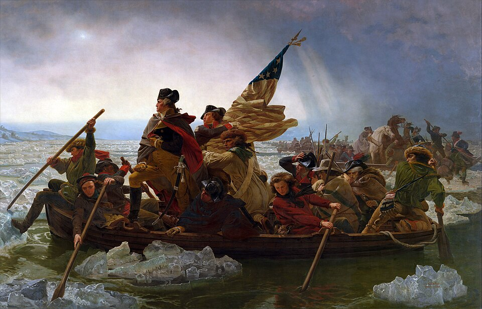

⏱️ 10초 카드 · 미국 독립혁명·건국 (1732~1799)
대륙군 총사령관두 임기 후 은퇴노예를 소유한 자유의 아버지
여는 질문 — 가장 큰 권력을 쥔 사람이 스스로 그것을 내려놓는 일은 왜 그토록 드물까?
이름
한국어조지 워싱턴
원어George Washington
실제 발음조지 워싱턴
로마자George Washington
영어권George Washington
별칭건국의 아버지
왜 이 사람인가
이 도감에서 워싱턴은 '권력을 잡는 법'이 아니라 '내려놓는 법'으로 기억되는 드문 인물이에요. 인물 이야기에서는 남미의 볼리바르와 짝으로 — '떠난 자와 남은 자'로 읽혀요. 같은 시대, 같은 독립의 꿈을 꾼 두 사람이 권력 앞에서 정반대의 선택을 했죠. 그리고 그 '자유의 아버지'가 동시에 노예를 소유했다는 모순까지, 이 인물은 통째로 질문이에요.
생애
버지니아의 측량사·농장주 출신으로, 독립전쟁에서 13개 식민지 연합군 총사령관을 맡았어요. 8년의 열세 속에서 군대를 지켜 내며(밸리포지의 겨울) 요크타운의 승리까지 — 신생국의 구심점 그 자체였죠.
1789년 만장일치로 초대 대통령에 뽑혔고, 두 번의 임기를 마친 뒤 권력을 스스로 내려놓았어요. 전쟁 영웅이 왕이 되던 역사의 공식을 깬 이 선례가 '대통령제'라는 실험을 진짜로 만들었다는 평가를 받아요.
동시에 그는 평생 수백 명의 노예를 부린 대농장주였어요. 유언으로 자기 몫 노예의 해방을 지시했지만, 살아서는 도망친 노예를 끈질기게 추적했죠. 미국이라는 나라의 모순 — 자유의 선언과 노예제 — 이 그 한 사람 안에 그대로 들어 있어요.
자료로 보기 — 유묵·사진

남긴 말
“외국과의 영구적인 동맹은 멀리하는 것이 우리의 참된 길입니다.”
세 번째 임기를 거절하고 물러나며 국민에게 남긴 고별사의 핵심 조언 · 출처: 워싱턴 고별사 1796 (요지·번역)
“나는 이제 큰 무대를 떠나 여러분께 작별을 고합니다.”
독립전쟁 승리 직후, 군 통수권을 의회에 반납하며 — 왕이 될 수도 있었던 자리에서 · 출처: 대륙군 사령관직 사임 연설 1783 (번역)
연표
- 1732출생 (버지니아)
- 1775대륙군 총사령관 임명
- 1781요크타운 승리
- 1789초대 대통령 취임
- 1797두 임기 후 스스로 퇴임 — 선례를 만들다
- 1799사망
생애의 길 — 마운트버넌과 독립전쟁 🗺️
농장주에서 총사령관, 그리고 스스로 물러난 대통령까지. 번호를 차례로 눌러 보세요.
현재 지도 위 경로예요. 가장 큰 권력을 쥔 자리에서 다시 농장으로 돌아간 사람 — 마지막 화살표가 다시 집을 향했다는 게 이 인물의 핵심이에요.
빛과 그림자권력을 내려놓아 민주주의의 전통을 만든 사람 — 그리고 노예의 노동 위에서 살았던 사람. 한 인물의 빛과 그림자를 함께 들 수 있는지가, 이 도감 전체의 연습 문제예요.
더 깊이 (고등·일반)
권력을 내려놓은 사람 — 신화와 사실
독립전쟁에서 이긴 워싱턴은 마음만 먹으면 왕이나 종신 통치자가 될 수도 있었어요. 그런데 그는 1783년 군 통수권을 의회에 반납하고 고향으로 돌아갔고, 대통령이 된 뒤에도 두 번의 임기만 마치고 스스로 물러났죠. 사람들은 그를 권력을 내려놓고 농장으로 돌아간 로마의 킨키나투스에 비유했어요. 미국 대통령의 '두 임기 관행'은 헌법이 아니라 워싱턴의 이 선택에서 시작됐고, 150년 뒤 수정헌법 제22조로 법이 됐어요.
참고: 워싱턴의 권력 이양·임기 관행 일반
자유의 아버지가 노예를 소유했다는 모순
워싱턴은 평생 수백 명의 노예를 거느린 대농장주였어요. '모든 사람은 평등하게 창조되었다'는 나라를 세운 사람이 말이죠. 말년에 그는 생각을 바꿔, 유언으로 '내 노예를 (아내가 죽은 뒤) 해방하라'고 명시했어요 — 건국 세대 주요 인물 중 노예를 법적으로 해방한 드문 경우예요. 다만 아내 쪽 소유의 노예는 풀어 줄 수 없었죠. 위대함과 위선이 한 사람 안에 공존한다는 것, 이 도감의 '빛과 그림자'가 가장 분명히 드러나는 지점이에요.
참고: 워싱턴과 노예제·유언 일반
대통령직을 '발명'하다 — 선례가 곧 헌법
워싱턴은 세계 최초의 근대적 대통령이었어요. 참고할 전례가 하나도 없었다는 뜻이죠. 그래서 그의 사소한 행동 하나하나가 곧 제도가 됐어요 — '폐하' 같은 왕족 호칭을 거부하고 그냥 '미스터 프레지던트'로 불리게 한 것, 장관들을 모아 내각을 운영한 것, 임기를 스스로 제한한 것까지. 그는 '무엇을 하는가'만큼이나 '무엇을 하지 않는가'로 대통령이라는 자리의 품격을 설계했어요.
참고: 초대 대통령직 선례 형성 일반
고별사와 미국의 '얽히지 않기' 전통
물러나며 남긴 고별사에서 워싱턴은 두 가지를 경고했어요 — 정파 싸움(당파)과 외국과의 영구 동맹. 특히 '유럽의 분쟁에 휘말리지 말라'는 조언은 이후 100년 넘게 미국 외교의 기본 정서(고립주의)가 됐죠. 두 차례 세계대전과 냉전을 거치며 미국이 결국 세계에 깊이 개입하게 되는 것과 견줘 보면, 건국의 아버지가 그어 둔 선이 얼마나 오래, 또 얼마나 변형되며 살아남았는지 보여요.
참고: 워싱턴 고별사와 미 외교 전통 일반
벚나무를 베지 않았다 — 신화 vs 인간
'어린 워싱턴이 벚나무를 베고 거짓말을 하지 않았다'는 일화는 사실 그가 죽은 뒤 한 전기 작가가 지어낸 이야기예요. 정직의 화신이라는 이미지 자체가 '만들어진 신화'였던 셈이죠. 실제 워싱턴은 야심 있고 자존심 강하며 때로 패전을 거듭한 사령관이기도 했어요. 신화를 걷어내고 보면, 결점 있는 인간이 '자리에 맞게' 자신을 다스리려 애쓴 이야기가 더 인상적이에요.
참고: 워싱턴 일화의 허구성(M. L. Weems) 일반
사람의 그물 — 함께 읽을 인물
더 공부하기 — 여기서 출발하세요
📚 책으로
- 워싱턴 — 그의 생애 (Washington: A Life) · 론 처노퓰리처상을 받은 표준 전기 — 신화가 아니라 인간 워싱턴을 입체적으로.
- 1776 · 데이비드 매컬러독립전쟁의 가장 위태로웠던 한 해 — 사령관 워싱턴이 거기 있어요.
📜 1차 사료
- 워싱턴 고별사 전문당파와 외국 동맹에 대한 경고 — 지금 읽어도 놀랄 만큼 구체적이에요.
- 워싱턴 유언장(노예 해방 조항)마운트버넌 공식 사이트에서 원문과 해설을 볼 수 있어요.
🎬 영상으로
- 다큐 〈Washington〉 (히스토리 채널)🟢 군인·대통령·노예주라는 세 얼굴을 함께 다룬 미니시리즈.
📍 가 볼 곳
- 마운트버넌 (버지니아)워싱턴의 농장 저택과 노예 거주지·묘 — 빛과 그림자가 한자리에 있어요.
- 워싱턴 기념탑 (워싱턴 D.C.)수도의 이름이자 한복판에 선 오벨리스크.